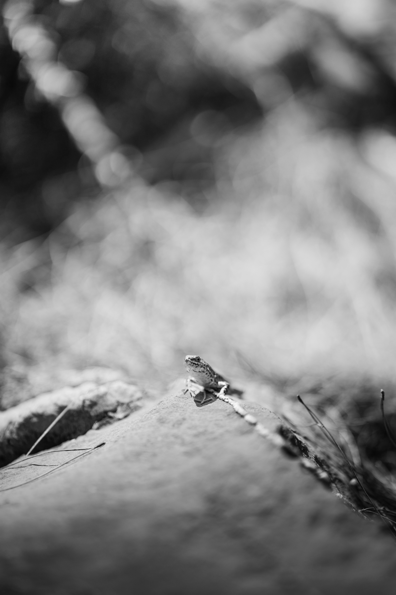
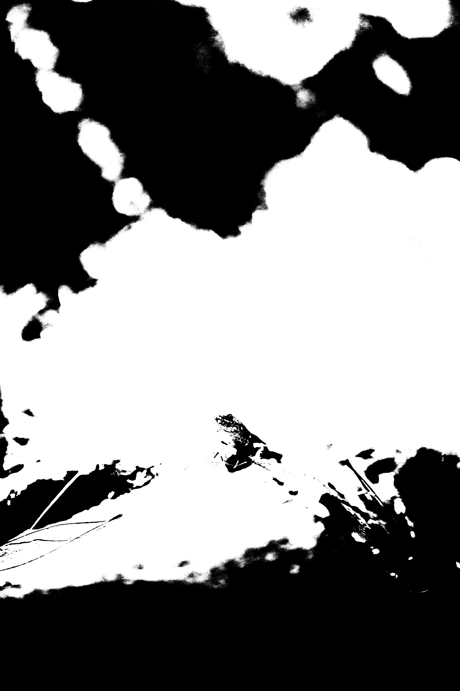
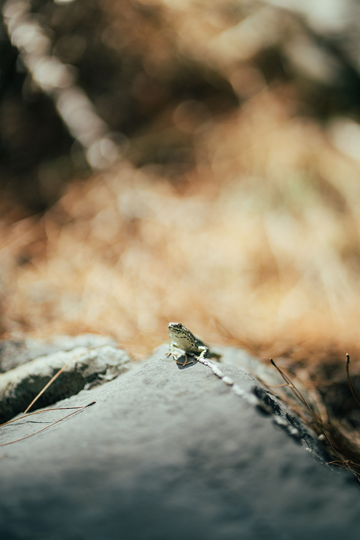
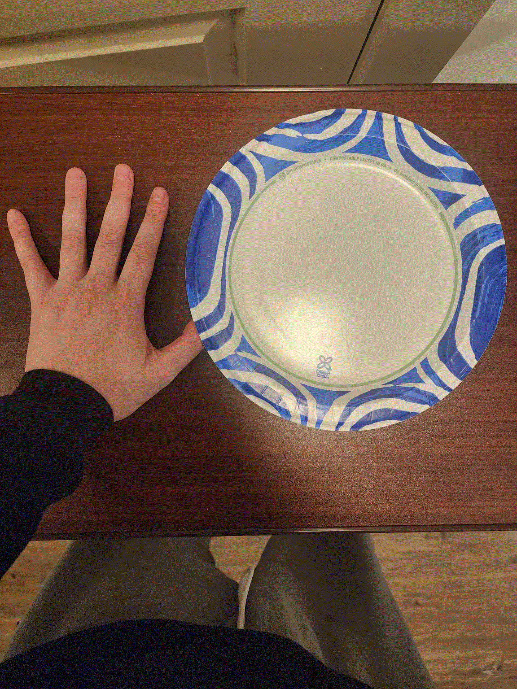
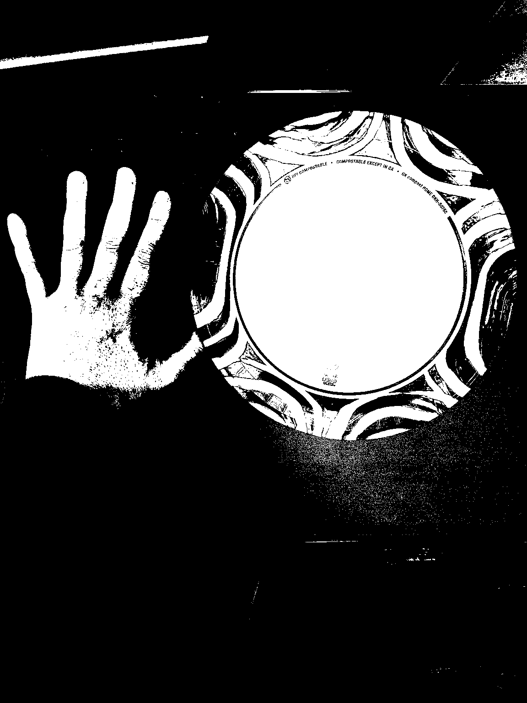

Original Image
Click the links below to open each version of the photograph in a new tab.
Original JPG | Original as GIF | Grayscale PNG | Black-and-White PNG


This page explores different image formats, resolutions, and proportions used in web development. By comparing original photographs with resized and modified versions, we can see how image quality, file size, and aspect ratio affect the appearance of images on a website.
I chose this photograph because it features a small lizard resting on a rock, which fits the Mellow Lizard theme of my course website. The photograph was taken by Alari Tammsalu and downloaded from Pexels. The original JPG measures 4672 by 7008 pixels. Its detailed textures and natural colors make it useful for comparing image formats and resolutions. The photographer also shares wildlife and nature photography on Pexels.
Original photograph: Alari Tammsalu on Pexels
Click the links below to open each version of the photograph in a new tab.
Original JPG | Original as GIF | Grayscale PNG | Black-and-White PNG


CSS can reduce the displayed size of an image without changing its original dimensions or file size. The original photograph remains 4672 by 7008 pixels.
This version was resized using an image editor to 600 by 900 pixels. Unlike CSS resizing, the edited file contains fewer pixels.

These examples intentionally change the width or height independently, causing the lizard to appear stretched or compressed.
The first image is 600 by 900 pixels. The second was reduced to 150 by 225 pixels. Both are displayed at the same size so the loss of image quality can be compared.
I took this photograph of a round paper plate with my hand beside it. The circular plate provides a clear geometric reference for demonstrating how incorrect image proportions can cause distortion. The original image was saved as a PNG photograph. The hand provides a recognizable comparison alongside the geometric shape.
Click the links below to open the different versions of my personal photograph.
Original PNG | Original as GIF | Grayscale PNG | Black-and-White PNG



This photograph uses CSS to reduce its displayed size while preserving its original proportions. The actual image file is not changed.
Using GIMP, I resized the personal photograph to 600 by 800 pixels while preserving the original aspect ratio. The plate remains circular.
These four photographs demonstrate incorrect proportions. The plate becomes distorted because its width or height is changed without maintaining the aspect ratio.
The first image is 600 by 800 pixels. The second was reduced to 150 by 200 pixels. Both are displayed at 300 by 400 pixels to demonstrate the loss of detail when enlarging a low-resolution photograph.